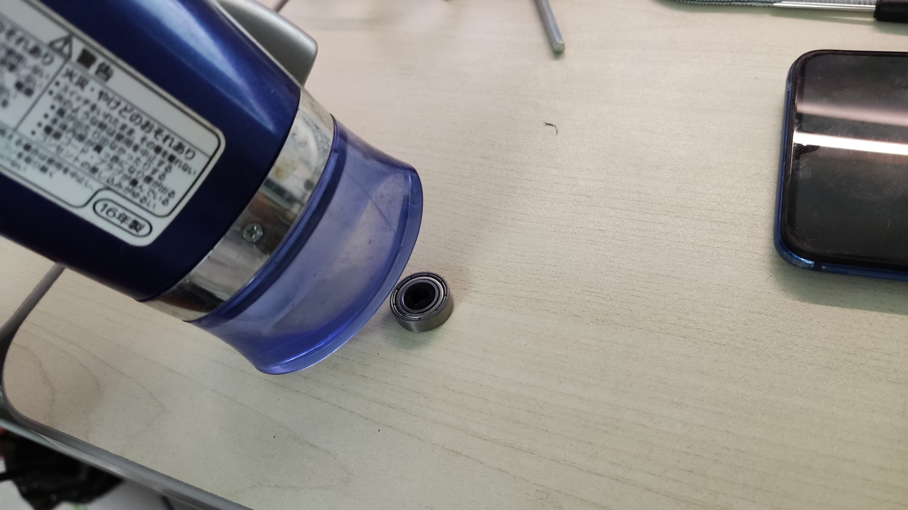

The first thing to do is assemble the all the parts together. But before that, since my bearings have those plastic inner rings, I had to use hair dryer to heat the bearings, so they got softened and could be take out.
Then, in order to achieve the effect that I want , which is having two stepper motors working together to adjust the camera, I printed out these two objects, one is for holding the motor, and the other one is for connecting the second stepper motor to the phone. Then I measured the dimensions of motor and my phone using caliper, making sure the printed objects would fit them in.